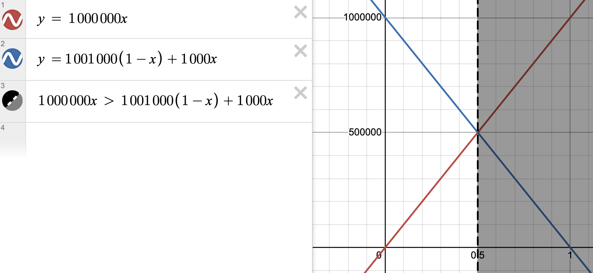

"Wouldn't it be cool to have systematic, predictable, accurate decision-making under uncertainty?" said every systematizer ever. We have good and bad news. The good news is that lots of people want this, and they started making theories about it. The bad news is that this is really hard.
The Nash Equilibrium is the strategy for a game such that, holding the other players' strategies constant, there would be no incentive for the player to change strategy. Hmm I actually don't properly get the details here
For example, you and 20 people are playing a game where you pick a number between 0 and 100, such that your guess will be the closest guess to 2/3 times the mean of everyone's guesses. Normally this is kind of difficult -- you have to simulate everyone else in your head, then simulate them simulating you, then simulate them simulating you simulating them, et cetera, then guess what level the others are simulating you at, and then use that to pick a number $n$ for $(2/3)^n * 50$ -- but there's a strategy where everyone can win instead: just pick 0.
If everyone picks 0 in the first round of this game, and then you decide to play a second one, no one has a reason to unilaterally change their guess -- if they do, they'll be ~guaranteed not to win. Hence, once everyone picks 0, you're at a stable strategic state: the Nash Equilibrium.
You could argue that the Nash Equilibrium is generally the "rational choice" for an agent, since it's the only place where you don't have an incentive to change strategy, but for the classical single-round prisoner's dilemma, the Nash Equilibrium is to defect. If either player cooperates the other has an incentive to change strategy and defect.
Can't we do better than this?
Game theory is what we call modeling games like these as a whole: you're modeling multiple agents, looking at their interactions. Decision theories, on the other hand, are about modeling different formal algorithms for individual decisions.
This is a bunch of notes on this and related topics.
This section is in progress.
If you want to formalize reasoning and decision-making, make your own decision theory. It's fun! Try it at home!
Sources:
Any given decision theory can be thought of as an attempt to formalize the relationship between an agent's goals and its actions — it describes a function for calculating the expected utility of an action so that the agent can choose. To put it another way, a decision theory specifies an algorithm for deciding, given an agent's goals.
The typical conventional reasoning we might use about the world is what we'd describe as Causal Decision Theory, or CDT. CDT evaluates decisions for an agent that is distinct from its environment at a specific point in time (i.e. the theory doesn't consider itself "part of the world," which is important if you start doing weird things like blackmail and acausal trades), making decisions based on its predictions about how well things will turn out.
In other words, you hold everything else constant — "the environment doesn't change" — and you look at the agent's decision in isolation; you look at the world in which the agent makes decision A as opposed to decision B, you compare the outcomes, and decide based on which one looks better — which one has higher expected utility.
It's really not that deep. Literally, "look at the causal consequences of your actions and decide which consequences you like better."
But there are outcomes where this formal theory doesn't match our intuitions.1 The typical example is that an economist can argue that, based on CDT, that it's pointless for any given individual to vote; it's impossibly unlikely that a democratic election with tens of thousands of voters will be swung by your vote in particular, nevermind one with millions of votes. It's so unlikely that it's not worth it to even vote in the first place -- the wasted time is a net negative in expectation. I don't really like this. I like voting in elections. I'd like a formalization of rationality that says you should vote in elections, since my imagination of a "perfectly rational society" filled with rational agents where everyone follows perfect systematic rationality (which is what we're trying to create here, presumably) is not one in which no one votes in elections.
There are many thought experiments we might use for decision theory other than this one — to me decision theory feels like a process similar to ethics, where we try to systematize our intuitions about "what is right." (Decision theory does, as you might expect, seem to have lots of theoretical connections to ethics — for example, the hypothesis that "moral rules are just encoded decision-theoretic equilibria.")
The rest of decision theory is kind of weird and different from CDT in order to try and account for the discrepancies between what we think is the right decision in various situations and what various theories describe. In reality, I don't know whether decision theorists actually want to provide a systematic account of human decision-making; human intuitions (regardless of the truth of the above hypothesis) did not evolve for complex nation-state negotiation, for example, and if we build superintelligent AI it... probably will make decisions that look more like decision-theoretic outcomes than human intuitions — so it will maybe be useful at least in those two senses (geopolitics and AI) when we're dealing with super-agents who can act more rationally than humans.
We can group all these decision theories under the name Logical decision theories. I'll start with the original competitor (I guess), which is Evidential decision theory.
To this point, I've been basically going for introduction and haven't done much formalization — which is funny considering the whole point of decision theories is to allow formalization of decision making.
The reason that I did that is because I wanted to get you started with intuitions that CDT is "the default." If I showed you the formalization first, it would distract from that point.
But now we need the formalizations in order to proceed with intuition-building — at least, I do, lol. Why? EDT is a very natural way of thinking about decision-making, but that's only visible in its formalization. Attempts at intuition-building definitions of EDT kind of suck, just due to its nature. For example:
For a while, there were two dominant decision theories, causal decision theory (CDT), and evidential decision theory (EDT):
- Causal decision theory: Take actions that physically cause you to get higher expected utility.
- Evidential decision theory: Take actions that would be evidence of you getting higher expected utility.
(from LessWrong, also linked above in sources)
Causal decision theory makes sense to me — you just do things that cause outcomes you like better — but it doesn't really click for me why doing things that "would be evidence of you getting higher expected utility" makes sense or is different.
Here is Wikipedia's version:
when a rational agent is confronted with a set of possible actions, one should select the action with the highest news value, that is, the action which would be indicative of the best outcome in expectation if one received the "news" that it had been taken. In other words, it recommends to "do what you most want to learn that you will do."
This didn't help much for me; seeing the formalization further down in the article did get rid of the confusion for me, and hopefully it will for you.
Here's how you formalize CDT. You calculate the counterfactual expected utility:
$$\mathbb{E}_{CDT}(a) = \sum_{o \in \mathcal{O}} \mathbb{U}(o_{i})*P(a \space\Box \rightarrow o_{i}) $$ Where
For EDT, you just use a simple expected utility function:
$$ \mathbb{E}_{EDT}(a) = \sum_{o \in \mathcal{O}} \mathbb{U}(o_{i}) * P(o_{i}|a)$$
Where
With CDT, your actions must cause $o_i$. With EDT, your action acts as Bayesian evidence that outcome $o_i$ is more likely to have occurred. The latter is focused on, simply, how your beliefs update in response to an action — it doesn't matter the causal relationship of your action to the outcome, only how it causes you to update your beliefs.
If you're not familiar with the ideas of predictive processing, or just Bayesian statistics in general, this might be a weird-feeling frame to you and it might not click. If that's the case, those are the two things you should try to go understand I guess — Bayes' theorem, and an intuition for how formal probabilistic models of the human mind treat belief updating and such. (maybe this is a topic for some future notes or something.)
Anyway, some thought experiments will likely help the intuition. The classic one is Newcomb's paradox.
Newcomb's Paradox is... we can say "unrealistic," at least for now, but it's maybe useful for exposing the difference between the theories.
Suppose a being in whose power to predict your choices you have enormous confidence. (One might tell a science-fiction story about a being from another planet, with an advanced technology and science, who you know to be friendly, etc. You know that this being has often correctly predicted your choices in the past (and has never, so far as you know, made an incorrect prediction about your choices), and furthermore you know that this being has often correctly predicted the choices of other people, many of whom are similar to you, in the particular situation to be described below. One might tell a longer story, but all this leads you to believe that almost certainly this being's prediction about your choice in the situation to be discussed will be correct.
Continuing in the words of Nozick:
You know that many persons like yourself, philosophy teachers and students, etc., have gone through this experiment. All those who took only what was in the second box, included those who knew of the second argument but did not follow it, ended up with \$M. And you know that all the shrewdies, all those who followed the second argument and took what was in both boxes, ended up with only \$1000. You have no reason to believe that you are any different, vis-à-vis predictability, than they are.
Think about your choice for a moment, then continue reading.
[..] I have put this problem to a large number of people, both friends and students in class. To almost everyone it is perfectly clear and obvious what should be done. The difficulty is that these people seem to divide almost evenly on the problem, with large numbers thinking that the opposing half is just being silly.
This may be a surprise to you, or it might not. It was to me, at least until I gave it a bit more thought.
The two different answers can be formalized by CDT and EDT:
CDT: "Well, the being already made its prediction. What I choose at this point won't have any causal influence on what's in the box. I'll take both boxes"
EDT: "Whatever choice I make, the being will probably have predicted, since it's almost certain to be correct in its predictions. I'll take the one box because it seems more likely to me that I'll get \$1,000,000 if I take the single opaque box, even if I take some very small risk that the being predicted wrong."
The difference between these two is that CDT is focused on causal influence, where EDT is focused on believed probability.
Here is where I think the formalization helps this make sense, so I'll go ahead with it. We formalize the CDT argument as follows. To simplify, we'll think about utility strictly in terms of money. (Note that I had Claude 3.5 generate this for me, because writing LaTeX takes forever, and made a few small modifications.)
We start with the equation $$\mathbb{E}_{CDT}(a) = \sum_{o \in \mathcal{O}} \mathbb{U}(o_{i})*P(a \space\Box \rightarrow o_{i})$$ Where: - $a$ is the action (choosing one box or two boxes) - $o_{i}$ are the possible outcomes - $\mathbb{U}(o_{i})$ is the utility of each outcome - $P(a \space\Box \rightarrow o_{i})$ is the probability of the outcome given the action (using the counterfactual conditional)
Let's define our variables.
Actions: - $a_1$: Choose one box (the opaque box, since in no situation does just choosing the transparent box maximize utility - $a_2$: Choose both boxes
Outcomes: - $o_1$: Opaque box contains \$1,000,000 - $o_2$: Opaque box contains \$0
Utilities: - $\mathbb{U}(o_1, a_1) = 1,000,000$ (one box, predicted correctly) - $\mathbb{U}(o_2, a_1) = 0$ (one box, predicted incorrectly) - $\mathbb{U}(o_1, a_2) = 1,001,000$ (two boxes, predicted incorrectly) - $\mathbb{U}(o_2, a_2) = 1,000$ (two boxes, predicted correctly)
Now, let's calculate the expected value for each action:
For choosing one box ($a_1$):
$\mathbb{E}_{CDT}(a_1) = \mathbb{U}(o_1, a_1) * P(a_1 \space\Box \rightarrow o_1) + \mathbb{U}(o_2, a_1) * P(a_1 \space\Box \rightarrow o_2)$
$\mathbb{E}_{CDT}(a_1) = 1,000,000 * P(a_1 \space\Box \rightarrow o_1) + 0 * P(a_1 \space\Box \rightarrow o_2)$
$\mathbb{E}_{CDT}(a_1) = 1,000,000 * P(a_1 \space\Box \rightarrow o_1)$
For choosing two boxes ($a_2$):
$\mathbb{E}_{CDT}(a_2) = \mathbb{U}(o_1, a_2) * P(a_2 \space\Box \rightarrow o_1) + \mathbb{U}(o_2, a_2) * P(a_2 \space\Box \rightarrow o_2)$
$\mathbb{E}_{CDT}(a_2) = 1,001,000 * P(a_2 \space\Box \rightarrow o_1) + 1,000 * P(a_2 \space\Box \rightarrow o_2)$
CDT assumes that the choice made doesn't affect the prediction. Therefore, we can simplify, since regardless of the choice the probability of outcome $o_1$ doesn't change.
Hence, let $p = P(a \space\Box \rightarrow o_1) = P(a_1 \space\Box \rightarrow o_1) = P(a_2 \space\Box \rightarrow o_1)$
Then:
$\mathbb{E}_{CDT}(a_1) = 1,000,000 * p$
$\mathbb{E}_{CDT}(a_2) = 1,001,000 * p + 1,000 * (1-p)$
$\mathbb{E}_{CDT}(a_2) = 1,001,000p + 1,000 - 1,000p = 1,000,000p + 1,000$
We can see that regardless of the value of $p$, $\mathbb{E}_{CDT}(a_2)$ is always greater than $\mathbb{E}_{CDT}(a_1)$ by 1,000.
The EDT formalization is much simpler, though to make it make sense we need to actually set numbers on some of the probabilities. We'll say that our prior for Omega making correct predictions about our choice is very close to 1, and continue using dollars to quantify utility.
Once again, we begin with the formula from above: $$\mathbb{E}_{EDT}(a) = \sum_{o \in \mathcal{O}} \mathbb{U}(o_{i}) * P(o_{i}|a)$$ Now, let's calculate the expected value for each action:
For choosing one box ($a_1$):
$\mathbb{E}_{EDT}(a_1) = \mathbb{U}(o_1, a_1) * P(o_1|a_1) + \mathbb{U}(o_2, a_1) * P(o_2|a_1)$
$\mathbb{E}_{EDT}(a_1) = 1,000,000 * P(o_1|a_1) + 0 * P(o_2|a_1)$
$\mathbb{E}_{EDT}(a_1) = 1,000,000 * P(o_1|a_1)$
For choosing two boxes ($a_2$):
$\mathbb{E}_{EDT}(a_2) = \mathbb{U}(o_1, a_2) * P(o_1|a_2) + \mathbb{U}(o_2, a_2) * P(o_2|a_2)$
$\mathbb{E}_{EDT}(a_2) = 1,001,000 * P(o_1|a_2) + 1,000 * P(o_2|a_2)$
The key difference in EDT is that it considers the conditional probabilities $P(o_i|a)$, which can be different for each action. In Newcomb's problem, these probabilities are typically assumed to be:
- $P(o_1|a_1) \approx 1$ (high probability of $1,000,000 if you choose one box)
- $P(o_2|a_1) \approx 0$ (low probability of $0 if you choose one box)
- $P(o_1|a_2) \approx 0$ (low probability of $1,000,000 if you choose two boxes)
- $P(o_2|a_2) \approx 1$ (high probability of $0 in opaque box if you choose two boxes)
Let's use these probabilities in our equations:
$\mathbb{E}_{EDT}(a_1) = 1,000,000 * 1 = 1,000,000$
$\mathbb{E}_{EDT}(a_2) = 1,001,000 * 0 + 1,000 * 1 = 1,000$
In this formalization, EDT recommends choosing one box ($a_1$) because it has a higher expected value. This aligns with the typical EDT solution to Newcomb's Paradox, where choosing one box is seen as evidence that you're the type of person the predictor would give $1,000,000 to.
So here, EDT wins against CDT. Yay! Does that mean EDT is strictly better than CDT? Not really, as we'll see in a moment. EDT has its own failure modes in other thought experiments, meaning we have to keep iterating, keep creating new attempts at decision theories that win.
I said earlier that CDT is focused on causal influence. I want to revisit and clarify that intuition. Another way to look at this is that CDT sees an agent's actions as independent from other actions taken simultaneously in the agent's environment — meaning it has trouble taking into account other agents' simulations of itself. An agent that is known to be a causal decision theorist will have trouble engaging with the idea that the other agents are making predictions knowing the calculations that CDT does.
That's really what Newcomb's problem is about. It's easy to get stuck on the idea that Omega is perfectly accurate, or almost so, because it feels unrealistic or confusing — the way that I see it is that it's really just a way of introducing the idea that "there are other agents who have been modeling you, and your decision theory needs to take that into account in the beginning."
Similar calculations will still apply if Omega is only 99% correct or 90% correct, the calculation is just less simple. For CDT, we just did algebra that ignored the real probability calculations:
CDT assumes that the choice made doesn't affect the prediction. Therefore, we can simplify, since regardless of the choice the probability of outcome $o_1$ doesn't change.
Hence, let $p = P(a \space\Box \rightarrow o_1) = P(a_1 \space\Box \rightarrow o_1) = P(a_2 \space\Box \rightarrow o_1)$
So it doesn't matter what Omega's prediction accuracy is, CDT always two-boxes. EDT is different. Here's what it looks like if Omega is 90% correct:
The key difference in EDT is that it considers the conditional probabilities $P(o_i|a)$, which can be different for each action. In Newcomb's problem, these probabilities are typically assumed to be:
- $P(o_1|a_1) = 0.9$ (90% probability of $1,000,000 if you choose one box)
- $P(o_2|a_1) = 0.1$ (10% probability of $0 if you choose one box)
- $P(o_1|a_2) = 0.1$ (10% probability of $1,100,000 if you choose two boxes)
- $P(o_2|a_2) = 0.9$ (90% probability of just $1,000 if you choose two boxes)
Let's use these probabilities in our equations:
$\mathbb{E}_{EDT}(a_1) = (1,000,000 \cdot 0.9) + (0 \cdot 0.1) = 900,000$
$\mathbb{E}_{EDT}(a_2) = 1,001,000 \cdot 0.1 + 1,000 \cdot 0.9 = 101,000$
Still, CDT two-boxes and EDT one-boxes. EDT changes its decision when Omega is only very slightly better than a random coin flip — when Omega's accuracy percentage (modeled here as $x$) is 0.5005 and the expected value curves intersect.

todo
okay im bored
TODO
[ ] decision theories are about "winning" — chooosing the right outceom
[ ] Reflexive stability: if you write a successor agent, does your decision theory tell you to implement itself, or does it allow you to self-modify
(note about decision theory vs. predicting based on brain. plausibly this can actually work IRL? but then the reality-based simulation isn't that helpful) . . .
If we want to do better than Defect-Defect in the classic prisoner's dilemma -- where you're in two different rooms, you'll need acausal trades. Maybe. Maybe there are other ways to do this or something that aren't absurd, but this one's kind of interesting and fun.
This section is in progress.
from Parametric Bounded Lob's Theorem and Robust Cooperation of Bounded Agents earlier work: https://www.lesswrong.com/posts/iQWk5jYeDg5ACCmpx/robust-cooperation-in-the-prisoner-s-dilemma also see readwise https://www.lesswrong.com/posts/XkNXsi6bsxxFaL5FL/ai-cooperation-is-already-studied-in-academia-as-program
def FairBot_k(Opponent): search for a proof of length k characters that Opponent(FairBot_k) = C if found, return C else return D
(We bound it, I'm assuming, so that the program is guaranteed to terminate.)
This is great. What if we put FairBot against itself? It looks for a proof of length k that the opponent will cooperate, and in order to figure it out must find a proof that its opponent will find a proof that itself finds a proof that its opponent...
Seemingly this goes infinitely, and since we have bounded things at length k the program will terminate without finding a proof and fail.
Actually this is not the case. There's some interesting math around provability that shows us why, called Lob's theorem. Using Lob's theorem, we can create "robust cooperative program equilibria for computationally bounded agents" -- this means unexploitable agents in this computer-based prisoner's dilemma game.
The statement "$\Box_{k} p$" means, "$p$ has a proof of $k$ or fewer characters."
As is always the case. ↩